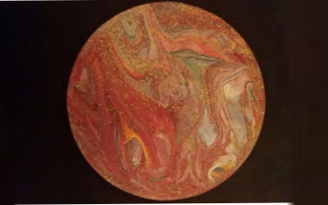
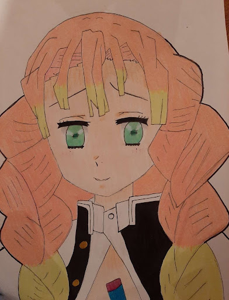
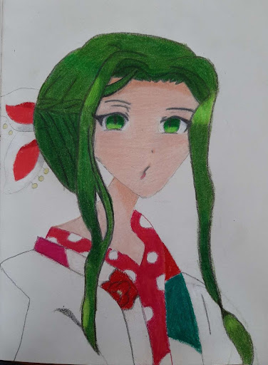
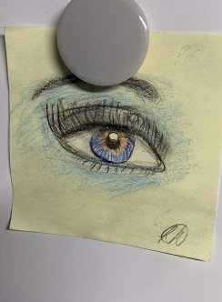

Posts
Drawings

{There are three seperate descriptions for these pieces. In order to read the description, click view post}
Elon the Fish

once apon a time thier lived this fish elon he was very bored and big so oone sunny day he jumped on a boat with people on it and had a nice moring snack
Cartoon Santa

A lovely and endearing art piece of sir Santa Claus created by Matteo Pucci! Upon seeing this drawing, you will have a smile plastered upon your face from its cuteness.
Coraline

This art piece is a precise display of Coraline, a character based in the movie "Coraline". The shading technique that is kept so neat and cleanly exacted within the sharp and bold...
Abstract Swirl
This delightful painting created within the area of a circle is delicately organized and beautifully painted. Not only does it use such elegant and contrasting colours, it is both calming and alarming to the eye! Such an art piece is sure to capture the attention of lots.
Shoe-line Skate Art

A single hockey skate out of a pair, the shoe is beautifully lined and coloured by the creator of it; Evan Elzbet. The piece uses a unique combination of lines as well as the eye-catching usage of the two different colours...
Kanroji Mitsuri
Name: Kanroji Mitsuri, the anime she is from is Demon slayer and in the show she is one of the hashira (some of the best demon slayers in the show)
Clay Pig
This is a pig. I made it by using polymer clay that can be baked to make it hard so it's not squishy anymore. My uncle gave me different colour polymer clay and 2 books on how to make different things!
Yako
Character description: Name: Yako, Anime: Toilet Bound Hanako Kun. I drew it January 7th and I decided to draw because why not. I just like the anime so I thought it would be cool to draw one of the characters
Abstract-Real Eye
This is an abstract eye I drew. I think it is abstract, but realistic. This is because it has realistic proportions, but has an abstract and more un-nautural colour palette...
Snowman

A solidly constructed snowman, painted by yet again, Matteo Pucci. An accurate representation of a happy-go-lucky snowman in the middle of winter! Unfortunately… Spring has arrived!
Big Mac

I’m freezing, help me. I’m in the North Pole and I only have a scarf and
hat. I cannot eat fish because I am vegan.
P.S. I’m NOT an owl
- ava
Flower Mandela
This page really stood out to me more then the other ones, because it looked really complicated, but I knew that once it was coloured, it would look pretty.I chose a balance of cool colors, like blue, pink and purple.
Sailor Moon

Pretty guardian Sailor Moon, a splendid and popular character from the world of shoujo manga..
Beautiful Painting

The piece is based of an inspiration and is purely made because of interest of the style and paint type.